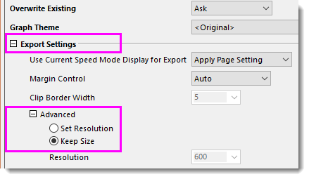

FAQ-1125 Was sollte ich tun, wenn die exportierte EMF-Datei nicht in AI geöffnet werden kann?
Export-EMF-Cant-Open-in-AI
Letztes Update: 17.01.2022
Wenn Sie das Menü Datei: Grafik exportieren (Erweitert) verwenden, um ein Origin-Diagramm im EMF-Format zu exportieren, es dann aber nicht im Adobe Illustrator öffnen können, versuchen Sie bitte folgende Lösungsmöglichkeiten.
- Im Dialog expGraph ändern Sie unter Exporteinstellungen die Option Erweitert für Auflösung festlegen, um die Größe beizubehalten.
- 
Oder
- Verwenden Sie stattdessen Datei: Grafik exportieren. Dieses Hilfsmittel expG2img verwendet intern Größe beibehalten.
Schlüsselwörter:Illustrator, Grafik exporieren, EMF, Enhanced MetaFile